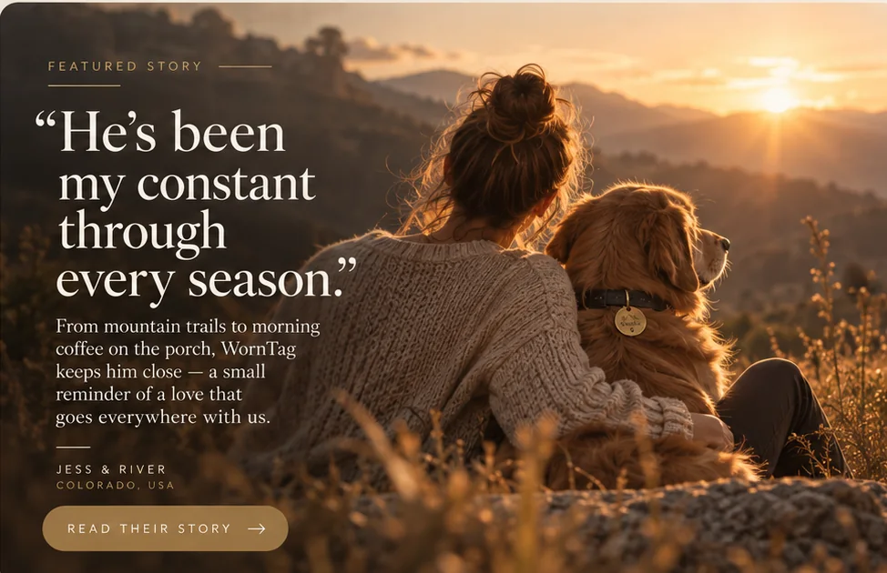

Our story
Some photographs
mean more than photographs.
WornTag began with a question: could a favourite pet photo inspire something you can interact with, while still respecting what a photograph can never contain?

The idea
Not a replacement.
A different way to remember.
A pet tag can look ordinary to everyone else. To the person who knows that animal, its scratches and wear belong to one specific life. WornTag takes that sense of recognition as its starting point.
Recognition over spectacle
The point is not to make technology the centre of the story. It is to pay attention to the face, coat, markings and habits that make one particular pet familiar. The most meaningful response would be a quiet “that’s them.”
Warmth with honest limits
WornTag is being developed as a digital keepsake and interactive companion. It does not recreate an animal’s consciousness, memories or personality, and it does not bring a pet back to life. We want to leave room for affection without making promises that technology cannot keep.
For pets here, and remembered
A favourite photograph can matter whether the pet is curled up nearby or lives only in memory. WornTag is intended to welcome both, without asking someone to explain their relationship or turning grief into a sales tactic.
WornTag is still in development. See the experience we are working toward →